MULTIMEDIA 12 · SPRINT 4 · CLASSROOM EDITION · 9 OCTOBER 2026
A poster makes a promise
1. A poster makes a promise
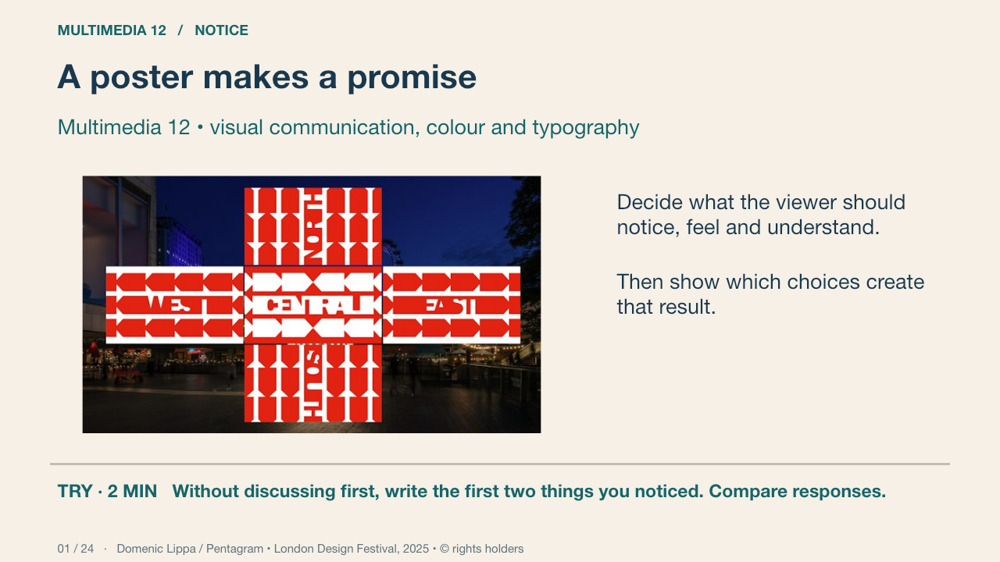
This genuine London Design Festival installation places typography in a public setting. Pentagram describes the 2025 thread motif as a way to express connection and collaboration. That is the designer’s stated intention, not a measurement of every viewer’s response. Compare size, repetition and viewing distance. Your project will be a welcoming community arts showcase poster.
Your turn: Without discussing first, write the first two things you noticed. Compare responses.
Success: Name a visible feature, use the term accurately and connect it to audience or purpose.
Practice feedback — open after your attempt
Different reading orders are possible. Point to size, position, contrast or subject matter; do not claim that one viewer response describes every audience.
Domenic Lippa / Pentagram • London Design Festival, 2025 • © rights holders Primary source
2. Audience, purpose and viewing context
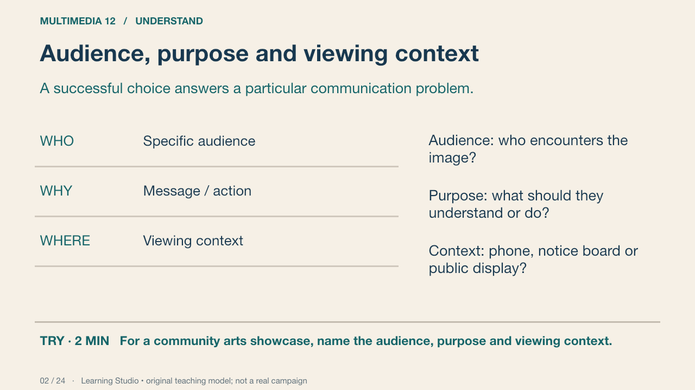
A corridor poster offers a different encounter from a phone image. In our worked example, a fictional community arts showcase needs a readable title, a communication cue and essential event details. The fictional example demonstrates reasoning, not an event that already exists.
Your turn: For a community arts showcase, name the audience, purpose and viewing context.
Success: A specific audience and encounter, a clear message and one checkable requirement.
Learning Studio • original teaching model; not a real campaign
3. Elements and principles
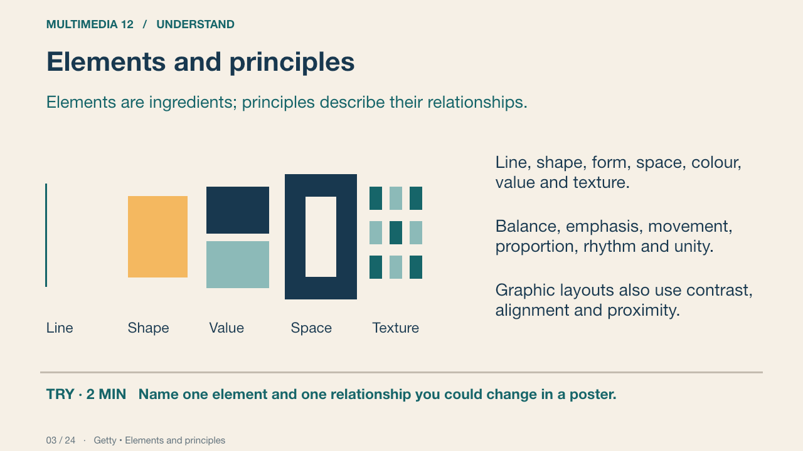
A dark rectangle is an element. Enlarging it relative to the title can alter emphasis. A photograph can suggest three-dimensional form through light and shade. A visual texture may look rough even though the printed surface is smooth.
Your turn: Name one element and one relationship you could change in a poster.
Success: Name a visible feature, use the term accurately and connect it to audience or purpose.
Practice feedback — open after your attempt
For example, a line is an element; repeating it at regular intervals can create rhythm. Explain the actual relationship.
Getty • Elements and principles Primary source
4. Hierarchy and emphasis
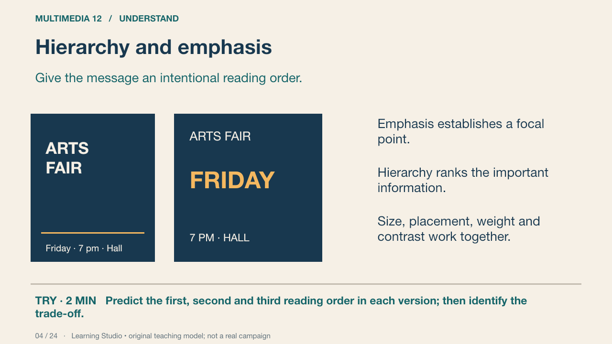
This original text-layout diagram keeps the words constant but changes their relative size. Reading order is a design intention that needs testing; it is not measured eye tracking. A huge title that hides the event details fails the brief.
Your turn: Predict the first, second and third reading order in each version; then identify the trade-off.
Success: Name a visible feature, use the term accurately and connect it to audience or purpose.
Practice feedback — open after your attempt
A dominant title can lead, followed by the purpose and event details. Required details must remain findable; larger is not automatically better.
Learning Studio • original teaching model; not a real campaign
5. Balance and proportion
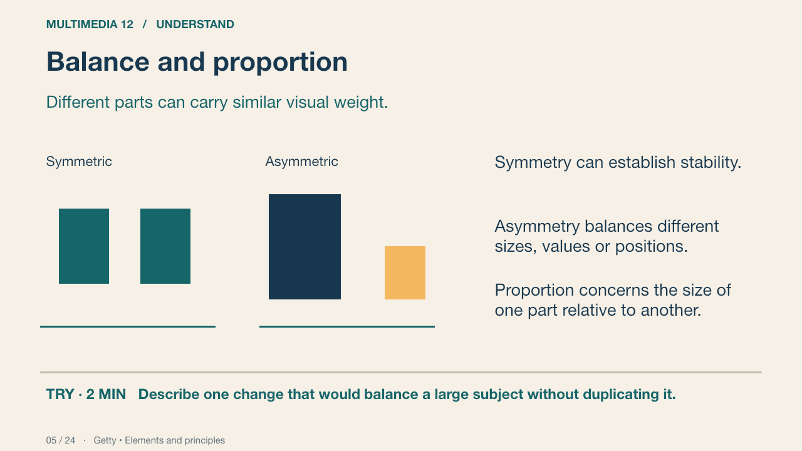
Compare the two schematic arrangements. Neither symmetry nor asymmetry guarantees an effective poster. Judge whether the visual weight supports the intended story and leaves room for information.
Your turn: Describe one change that would balance a large subject without duplicating it.
Success: Name a visible feature, use the term accurately and connect it to audience or purpose.
Practice feedback — open after your attempt
A smaller strong-contrast title or counterweight may balance a larger quieter area. Explain position and visual weight, not a rule that both sides must match.
Getty • Elements and principles Primary source
6. Contrast
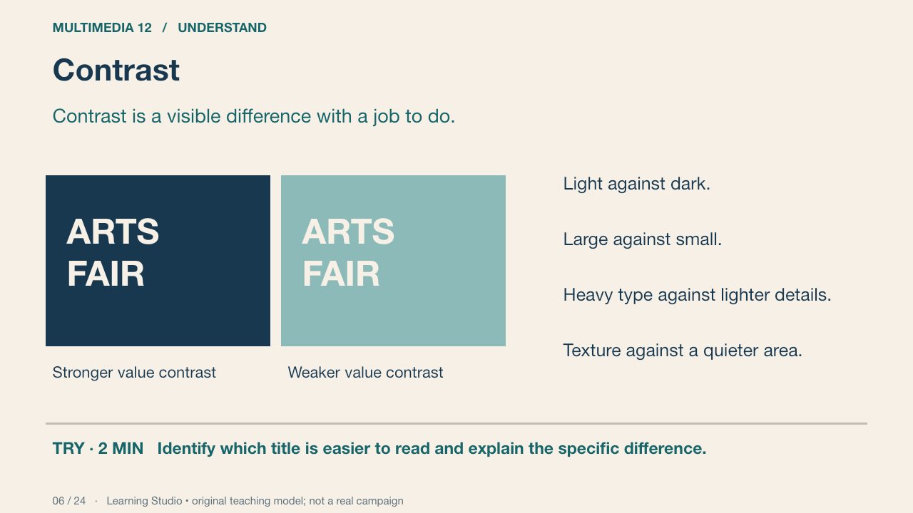
The teaching diagram changes value contrast while keeping the wording constant. Hue differences alone may leave text difficult to read. Test the actual background beneath the title, including any photograph.
Your turn: Identify which title is easier to read and explain the specific difference.
Success: Name a visible feature, use the term accurately and connect it to audience or purpose.
Practice feedback — open after your attempt
The relative lightness of title and background matters. Naming complementary hues does not establish legibility.
Learning Studio • original teaching model; not a real campaign
7. Alignment and proximity
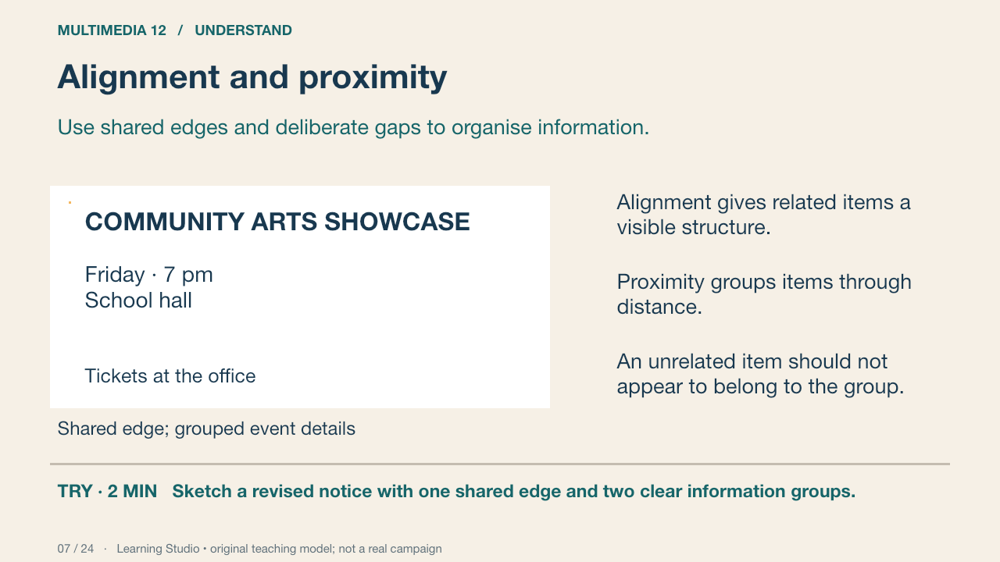
The original notice diagram separates its title, event description and practical details. A shared edge helps structure the reading. The gaps establish groups. Centring everything is a choice to test, not a universal design rule.
Your turn: Sketch a revised notice with one shared edge and two clear information groups.
Success: Name a visible feature, use the term accurately and connect it to audience or purpose.
Practice feedback — open after your attempt
Explain which items belong together and show a larger gap between groups than within a group.
Learning Studio • original teaching model; not a real campaign
8. Repetition, rhythm, unity and variety
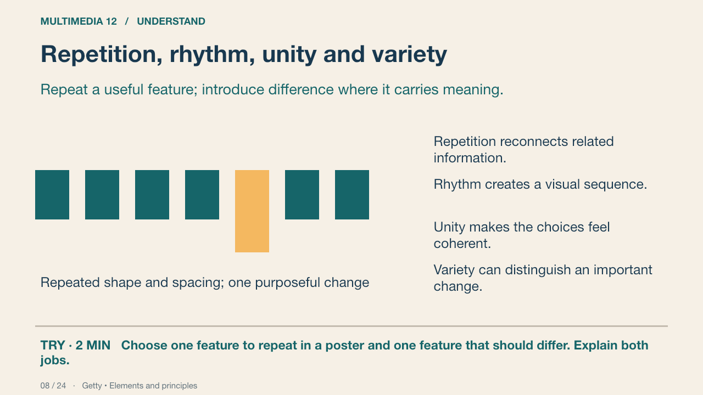
Repeated type roles and intervals can guide a reader. Variation in size or spacing changes the pace. The diagram models relationships; it does not claim that every viewer follows an identical path.
Your turn: Choose one feature to repeat in a poster and one feature that should differ. Explain both jobs.
Success: Name a visible feature, use the term accurately and connect it to audience or purpose.
Getty • Elements and principles Primary source
9. Space and visual identity
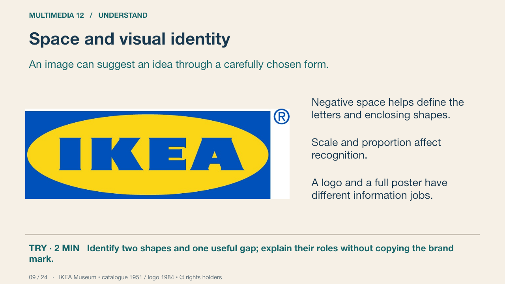
This genuine blue-and-yellow IKEA mark is documented by IKEA Museum with the 1984 visual profile. Examine the wordmark, oval and rectangle. The surrounding spaces help separate forms. This is a logo, not a complete event poster; a poster must also communicate the required information.
Your turn: Identify two shapes and one useful gap; explain their roles without copying the brand mark.
Success: Name a visible feature, use the term accurately and connect it to audience or purpose.
IKEA Museum • catalogue 1951 / logo 1984 • © rights holders Primary source
10. Design principles in a real campaign
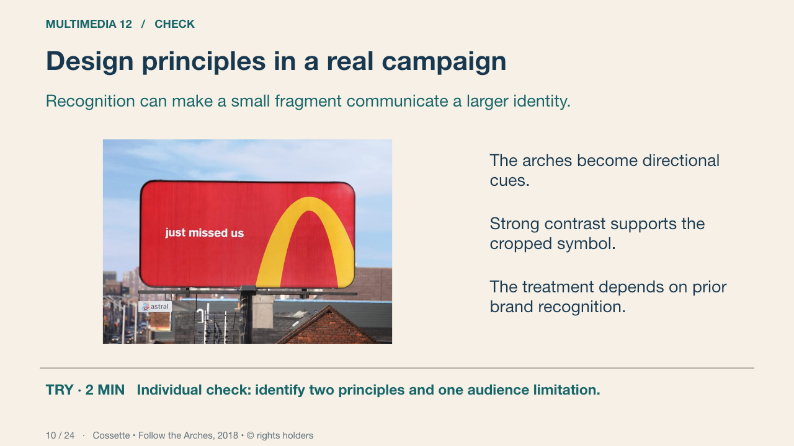
Cossette’s 2018 Follow the Arches campaign uses cropped sections of McDonald’s arches as wayfinding. The source identifies the campaign. We can examine form and likely recognition demands; this photograph does not measure a driver’s response or campaign effectiveness.
Your turn: Individual check: identify two principles and one audience limitation.
Success: Name a visible feature, use the term accurately and connect it to audience or purpose.
Practice feedback — open after your attempt
Contrast and emphasis help the symbol stand out; the crop and placement suggest direction. A viewer unfamiliar with the brand may interpret it differently.
Cossette • Follow the Arches, 2018 • © rights holders Primary source
11. Colour models
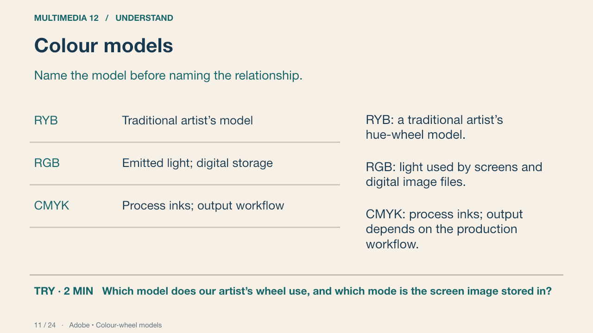
RYB relationships and RGB light relationships are not identical. Red and green sit opposite in the named RYB teaching wheel; red and cyan are complementary in an RGB model. RGB storage alone does not tell you which geometry a palette tool uses.
Your turn: Which model does our artist’s wheel use, and which mode is the screen image stored in?
Success: Name a visible feature, use the term accurately and connect it to audience or purpose.
Practice feedback — open after your attempt
The teaching wheel is RYB; our digital screen image is RGB. Do not transfer a named complement across models without checking.
Adobe • Colour-wheel models Primary source
12. The RYB colour wheel
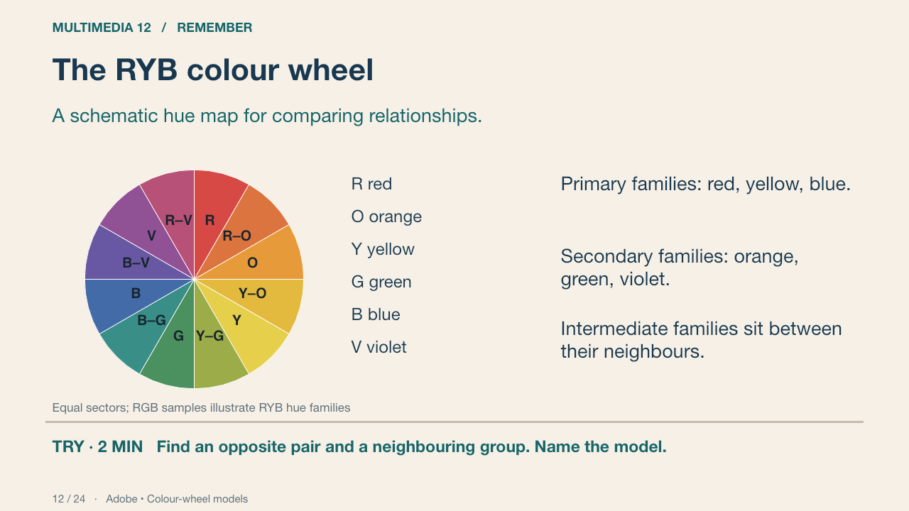
This editable diagram places twelve named hue families at equal schematic intervals. The RGB display samples illustrate an RYB arrangement; they are not a physical pigment-mixing experiment. Locate blue and orange opposite each other. Locate blue, blue-green and green as neighbours.
Your turn: Find an opposite pair and a neighbouring group. Name the model.
Success: Name a visible feature, use the term accurately and connect it to audience or purpose.
Practice feedback — open after your attempt
Blue/orange are an opposite pair on this RYB wheel; blue/blue-green/green are neighbours.
Adobe • Colour-wheel models Primary source
13. Hue, value and saturation
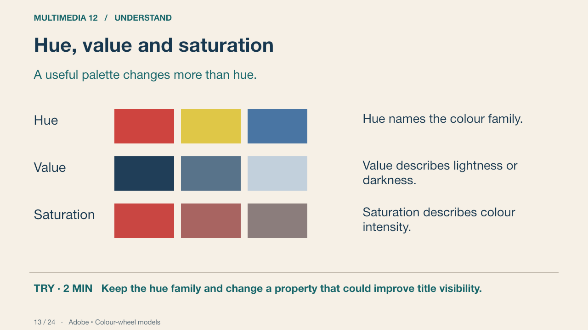
The samples isolate hue, then lightness, then intensity. In a poster, a muted background can support a more saturated accent. A palette with several hues but similar values may still produce weak title contrast.
Your turn: Keep the hue family and change a property that could improve title visibility.
Success: Name a visible feature, use the term accurately and connect it to audience or purpose.
Practice feedback — open after your attempt
Change relative value, or reduce the background’s intensity where it competes. Check the actual image, not just the wheel.
Adobe • Colour-wheel models Primary source
14. Palette relationships
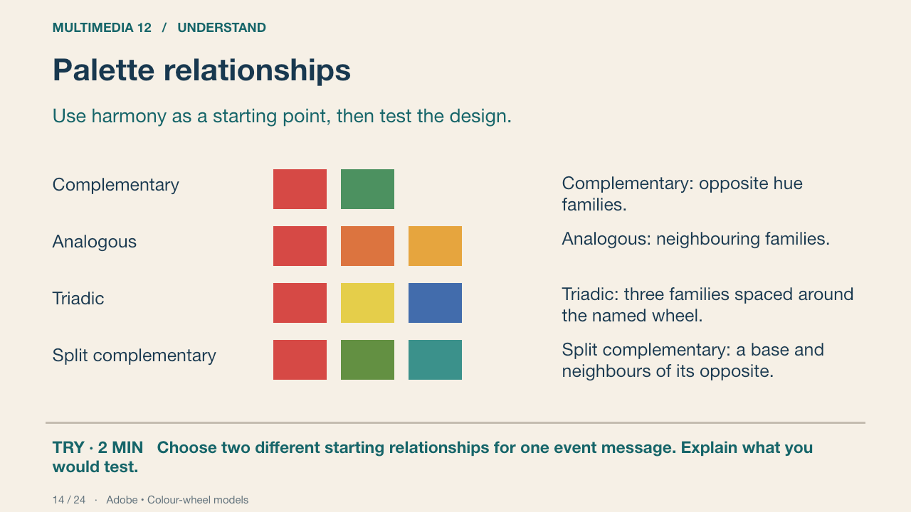
The samples represent hue families in the same RYB teaching model. Exact display colours are teaching approximations. Neutral colours and unequal proportions are useful; an entire poster need not be divided equally among its hues.
Your turn: Choose two different starting relationships for one event message. Explain what you would test.
Success: Name a visible feature, use the term accurately and connect it to audience or purpose.
Adobe • Colour-wheel models Primary source
15. Colour roles and proportions
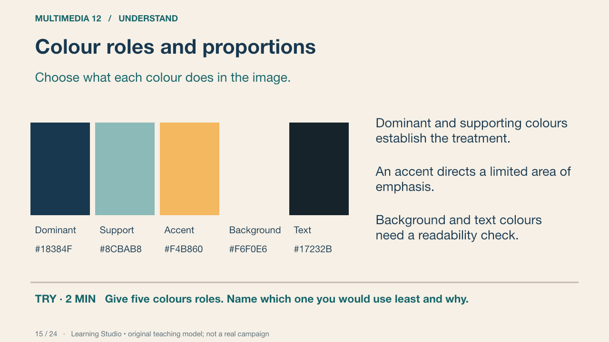
This original five-colour palette assigns jobs to its samples. Five swatches are a manageable teaching constraint, not a universal industry rule. An accent should be considered in relation to its area and surrounding values; equal swatch sizes do not prescribe equal usage.
Your turn: Give five colours roles. Name which one you would use least and why.
Success: Roles fit the audience and message; the proposed text/background pair is tested.
Learning Studio • original teaching model; not a real campaign
16. Colour meaning needs context
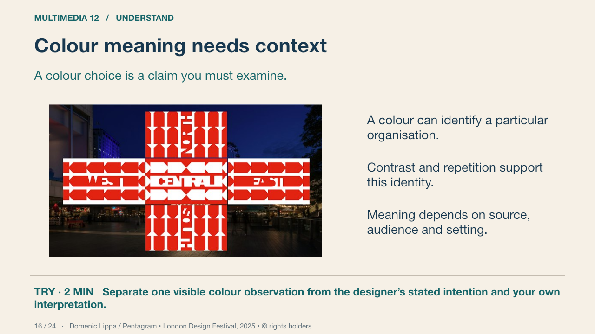
Pentagram says the 2025 identity retained the London Design Festival’s signature red for continuity and used a new typographic thread to express connection. Do not turn that source claim into a universal rule that red always produces one emotion. Compare value contrast and real viewing conditions.
Your turn: Separate one visible colour observation from the designer’s stated intention and your own interpretation.
Success: Name a visible feature, use the term accurately and connect it to audience or purpose.
Practice feedback — open after your attempt
An observation describes the pink lettering or the shape. The source supplies intention. Your explanation of its likely effect remains an interpretation.
Domenic Lippa / Pentagram • London Design Festival, 2025 • © rights holders Primary source
17. Create and transfer a palette
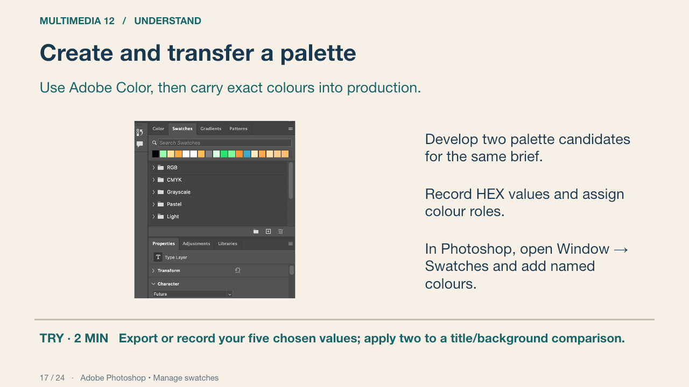
Adobe Color is the professional browser companion. Adobe documents loading CSS colours into Swatches, and adding a named swatch from the foreground colour. Our linked handoff card gives both routes and a manual fallback. The actual CSS import has not been verified in this app build; use the documented manual route if the file filter is unavailable.
Your turn: Export or record your five chosen values; apply two to a title/background comparison.
Success: The production colours match the recorded values and the title remains readable.
Adobe Photoshop • Manage swatches Primary source
18. Typography has communication roles
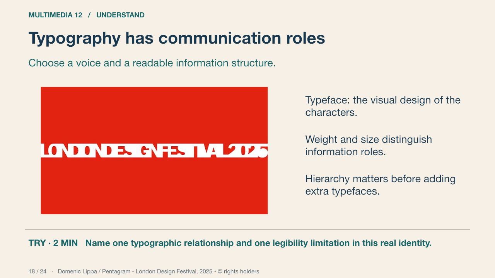
This genuine festival graphic treats lettering as a connected visual thread. Typeface, weight, scale, spacing and arrangement can become an identity as well as carry words. The stylised form also presents a legibility trade-off. Identify what is readable at this size and what needs a larger or clearer supporting treatment.
Your turn: Name one typographic relationship and one legibility limitation in this real identity.
Success: Name a visible feature, use the term accurately and connect it to audience or purpose.
Domenic Lippa / Pentagram • London Design Festival, 2025 • © rights holders Primary source
19. Kerning and tracking
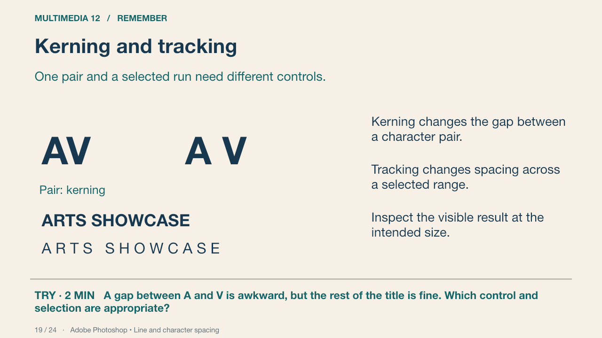
The AV diagram isolates one pair. The tracked word diagram changes gaps across a run. In Photoshop, place the insertion point between two characters for pair kerning; select the characters for tracking. Metrics and Optical are different automatic approaches; this diagram does not reproduce Photoshop’s font engine.
Your turn: A gap between A and V is awkward, but the rest of the title is fine. Which control and selection are appropriate?
Success: Name a visible feature, use the term accurately and connect it to audience or purpose.
Practice feedback — open after your attempt
Use pair kerning with the insertion point between those characters. Changing tracking across the whole title changes more than the problem.
Adobe Photoshop • Line and character spacing Primary source
20. Leading and alignment
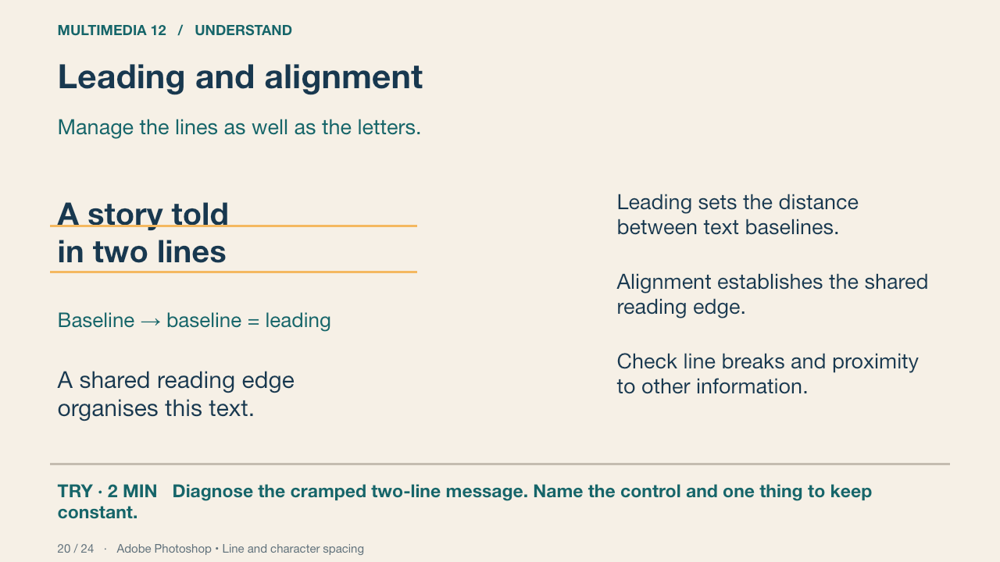
A cramped two-line supporting message needs a line-spacing decision. Extra tracking spreads letters horizontally and does not resolve the vertical gap. The same line breaks are retained in the comparison so that the changed spacing is visible.
Your turn: Diagnose the cramped two-line message. Name the control and one thing to keep constant.
Success: Name a visible feature, use the term accurately and connect it to audience or purpose.
Practice feedback — open after your attempt
Change leading while initially keeping wording, typeface and size constant. Then inspect whether the block fits its information role.
Adobe Photoshop • Line and character spacing Primary source
21. Typography in Photoshop
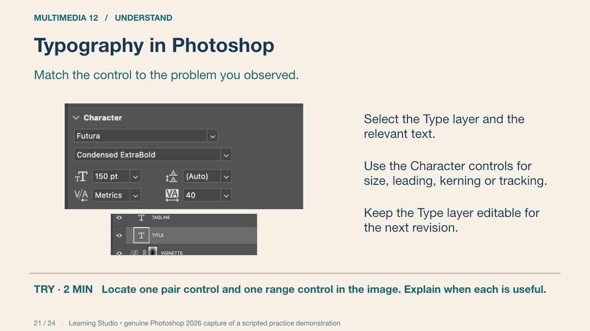
This genuine Photoshop 2026 capture shows an editable TITLE layer with Character controls. Its existing practice values are not a recipe for your poster. The capture shows a Futura title at 150 pt, Metrics kerning and tracking 40; your choices must be tested at your own dimensions. The practice artwork is constructed and partly AI-origin, not a real film campaign.
Your turn: Locate one pair control and one range control in the image. Explain when each is useful.
Success: Name a visible feature, use the term accurately and connect it to audience or purpose.
Practice feedback — open after your attempt
Kerning addresses the insertion-point pair; tracking affects the selected range. The same numeric value is not a universal appearance across typefaces.
Learning Studio • genuine Photoshop 2026 capture of a scripted practice demonstration
22. A photographic communication cue
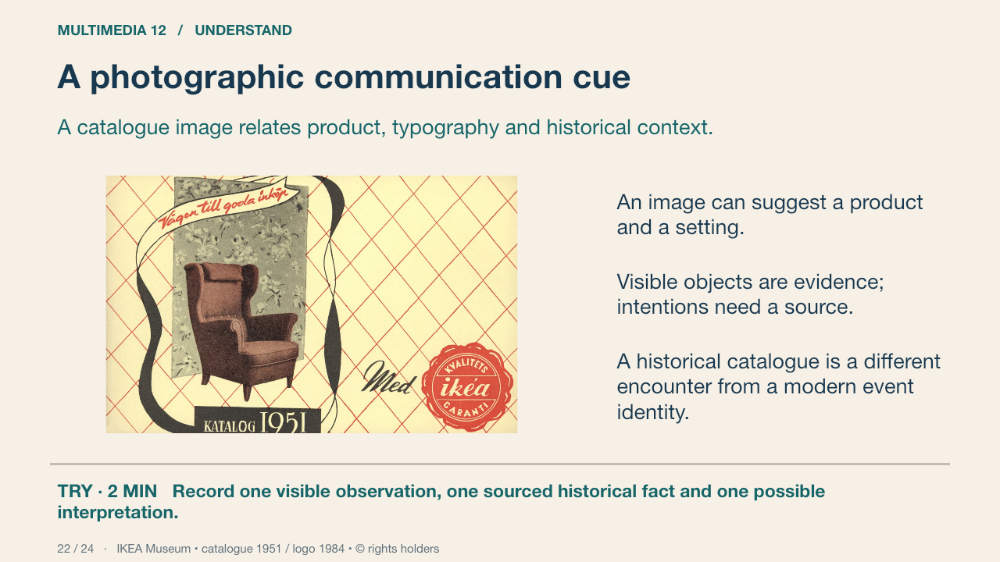
IKEA Museum identifies this as the 1951 catalogue cover and documents the short-lived quality-guarantee seal. The armchair photograph supplies a furniture cue. Separate what you can see from the museum’s historical account and from your interpretation of the intended audience. You are analysing a catalogue cover, not a film image.
Your turn: Record one visible observation, one sourced historical fact and one possible interpretation.
Success: Uses a visible detail, accurate source context and language that does not universalise the interpretation.
IKEA Museum • catalogue 1951 / logo 1984 • © rights holders Primary source
23. Historical and current image analysis
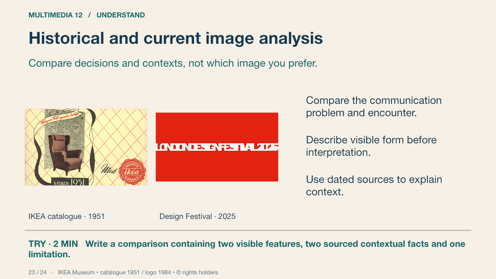
Compare the 1951 IKEA catalogue cover with the 2025 London Design Festival identity. They are different media and communication problems; acknowledge that limit. Use IKEA Museum for the catalogue context and Pentagram for the festival’s stated connection motif. Contrast what images and type are asked to communicate, rather than claiming one period’s design is universally better.
Your turn: Write a comparison containing two visible features, two sourced contextual facts and one limitation.
Success: Each point cites a visible feature or source fact; emotion is framed as a defensible interpretation.
IKEA Museum • catalogue 1951 / logo 1984 • © rights holders Primary source
24. Apply and retrieve
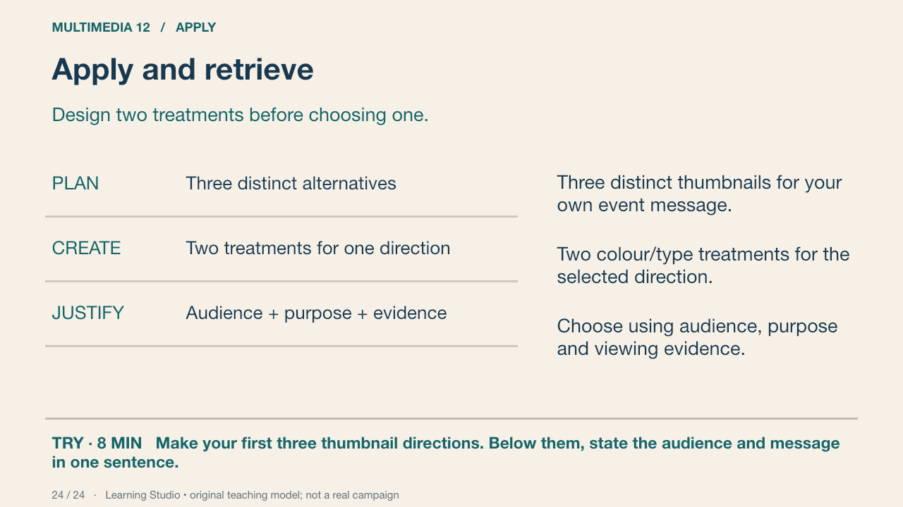
You now have vocabulary and worked examples. Use them to compare alternatives rather than decorate a copied poster. Retain the rejected treatment and state why it serves the brief less well. Next class, retrieve kerning/tracking/leading and explain a fresh hierarchy fault without notes.
Your turn: Make your first three thumbnail directions. Below them, state the audience and message in one sentence.
Success: Three substantially different compositions; a coherent event message; a justified next direction.
Learning Studio • original teaching model; not a real campaign
Submit a checkpoint
Open Design a Story Knowledge + Reflection Form ↗
Sign in with your school account and choose one checkpoint: Knowledge check, Design Lab reflection, Proposal and planning, or Final reflection and evidence handoff. Complete that section and press Submit; check the confirmation.
For files, use a school Drive folder shared with your teacher, then paste its link in the matching Form section. Keep the editable PSD, viewing export, planning and source log. For a paper response, print and write, then hand it to your teacher; teacher capture records the evidence.
Device saving and downloads are working drafts. Google Form submission requires internet access. Teacher feedback and review determine achievement. The project descriptor rubric is proposed; formal criterion-based grading remains pending approval.